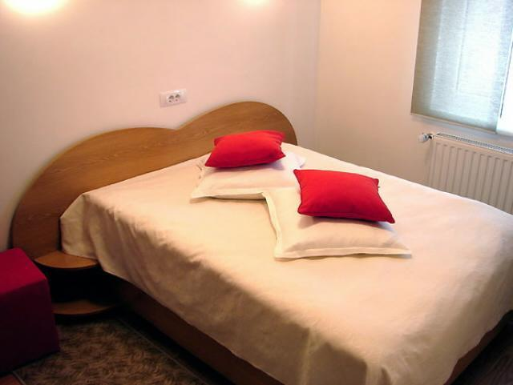
Cameră dublăCameră dublă
Cameră confortabilă cu baie proprie, aer condiționat, TV și mini-bar. Wi-Fi gratuit inclus.
100 leipe noapte · fără mic dejun
Rezervă
Cazare în Baia Mare · Maramureș ★★★
Pensiunea Dealul Florilor te așteaptă în nordul orașului, vizavi de Stadionul Viorel Mateianu — camere curate cu baie proprie, un restaurant cald și o terasă cu vedere spre deal. Aproape de tot, dar destul de departe de zgomot.
Bine ai venit
Pensiunea Dealul Florilor este o pensiune de 3 stele situată pe strada Dealul Florilor nr. 12, în partea de nord a orașului Baia Mare, chiar vizavi de Stadionul Viorel Mateianu. Clădirea roșie, ușor de recunoscut, adăpostește 8 camere și 20 de locuri de cazare.
Camerele — duble, triple și apartamente — au mobilier modern, baie proprie cu duș sau cadă, aer condiționat, televizor, mini-bar și uscător de păr. Wi-Fi-ul este gratuit în toată pensiunea, iar la parter te așteaptă un restaurant și o terasă cu grătar.
„Locație ideală atât pentru călătoriile de afaceri, cât și pentru un sejur de relaxare.”
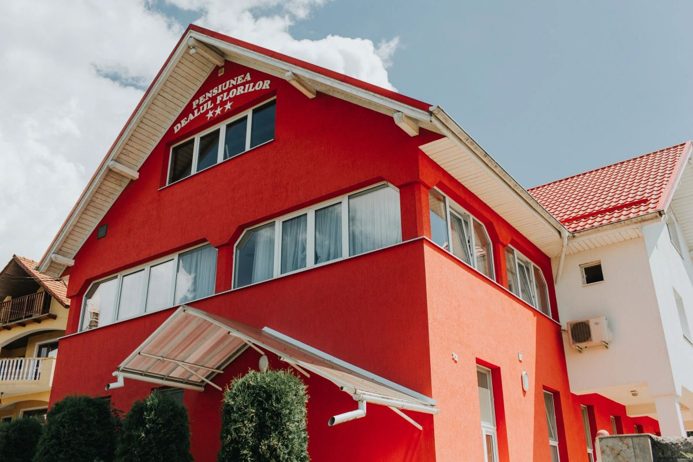
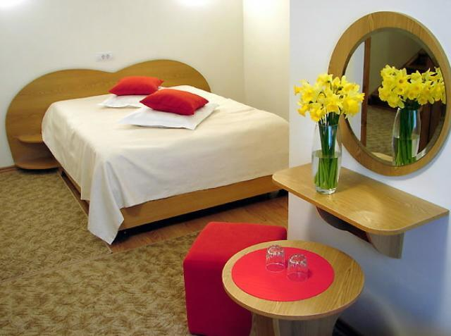
Camere & Prețuri
Prețuri reale, pe noapte, fără mic dejun inclus. Disponibilitatea și tarifele exacte se confirmă direct la telefon.

Cameră dublăCameră confortabilă cu baie proprie, aer condiționat, TV și mini-bar. Wi-Fi gratuit inclus.
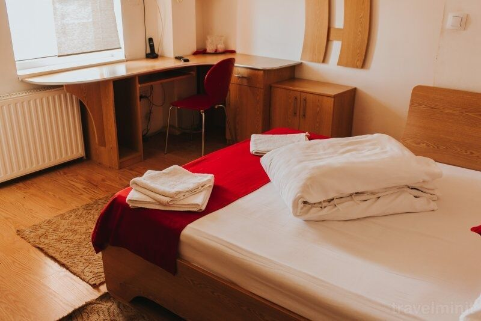
ApartamentApartament clasificat 2–3 stele, cu mobilier modern, baie proprie, aer condiționat, TV și mini-bar.
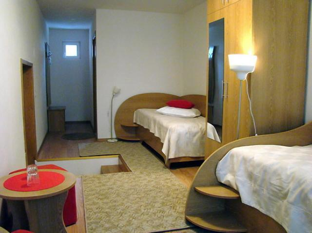
Cameră triplăCameră spațioasă pentru trei persoane, cu baie proprie, aer condiționat, frigider, TV și mini-bar.
Toate camerele au baie proprie, aer condiționat, TV, mini-bar și uscător de păr. Se acceptă plata cu numerar, card, transfer bancar și vouchere de vacanță.
Facilități
De la restaurant și terasă cu grătar, până la parcare și Wi-Fi gratuit — totul la îndemână.
Sală de mese elegantă pentru mese, evenimente și organizare de petreceri.
Bar propriu și salon primitor pentru o cafea sau o discuție relaxată.
Zonă de grătar și foișor în curte, ideale pentru serile de vară.
Parcare privată, gratuită, chiar la pensiune.
Internet wireless gratuit în toate spațiile pensiunii.
Aer condiționat și încălzire în fiecare cameră, pe tot parcursul anului.
Spălătorie disponibilă pentru sejururile mai lungi.
Animalele de companie — pisici și câini — sunt binevenite.
Galerie
Fațada roșie, camerele, restaurantul și împrejurimile din Baia Mare.
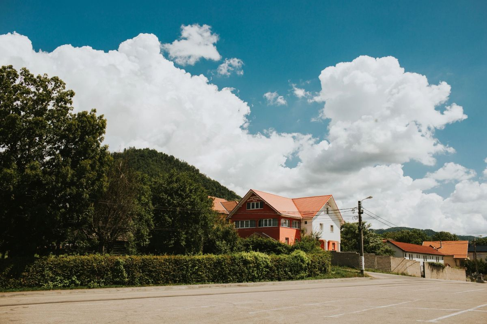
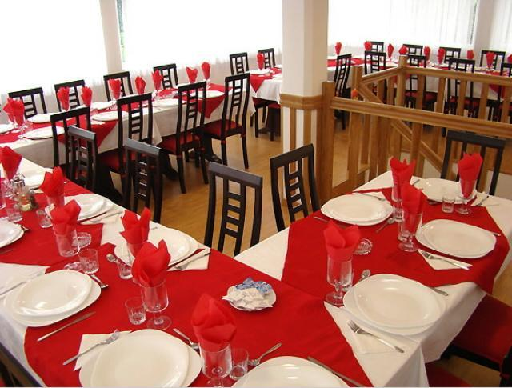
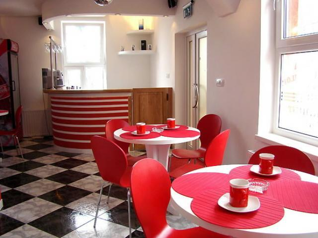
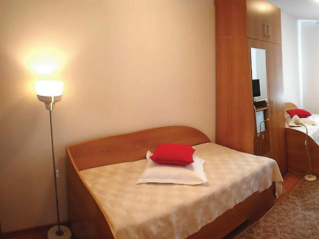
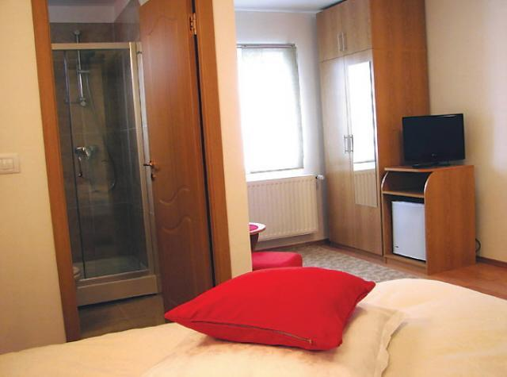
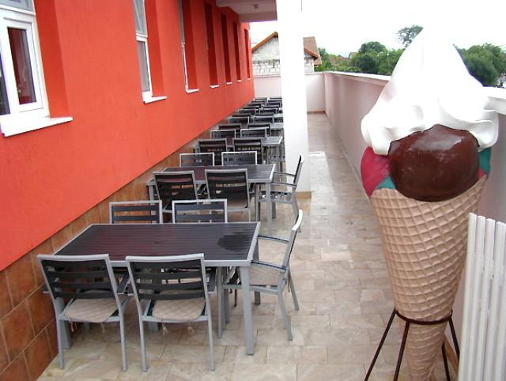
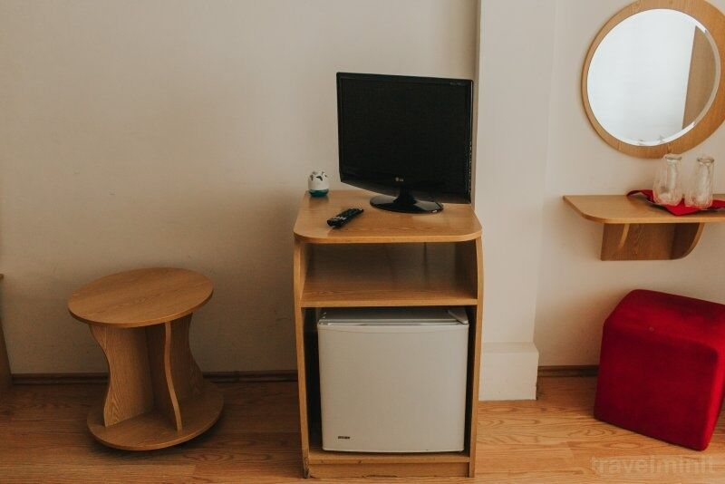
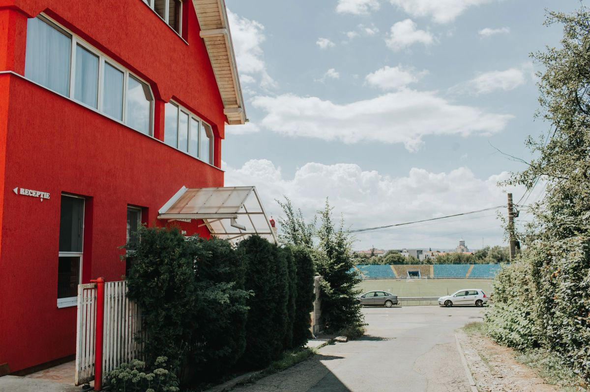
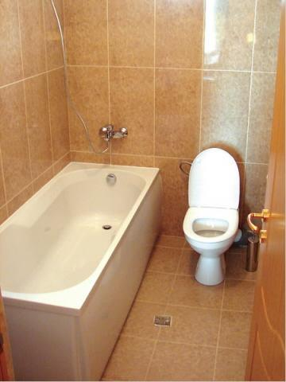
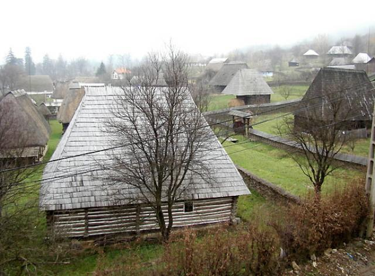
Ce apreciază oaspeții
★★★★★„Locație foarte accesibilă, chiar lângă stadion. Ușor de găsit și de ajuns oriunde în oraș.”
— Oaspete, Baia Mare
★★★★★„Parcare la ușă și cameră cu tot ce trebuie — aer condiționat, TV și baie proprie. Exact ce căutam.”
— Oaspete, sejur de business
★★★★★„Am venit cu câinele și au fost foarte primitori. Terasa cu grătar a fost punctul culminant al serii.”
— Oaspete, weekend în Maramureș
Pensiune clasificată 3★ · vezi și pagina de Facebook pentru fotografii recente.
Contact & Locație
Strada Dealul Florilor nr. 12
Baia Mare, județul Maramureș
(vizavi de Stadionul Viorel Mateianu)
Muzeul Satului Maramureșean este la doar 150 m, iar centrul vechi al orașului la câteva minute.
Indicații rutiere →| Check-in | de la 14:00 |
|---|---|
| Check-out | până la 12:00 |
| Recepție | non-stop, 24 h |
Se acceptă vouchere de vacanță și schimb valutar la recepție.
Camere de la 100 lei pe noapte, parcare și Wi-Fi gratuite, la un pas de centrul orașului Baia Mare. Sună-ne și îți găsim locul potrivit.